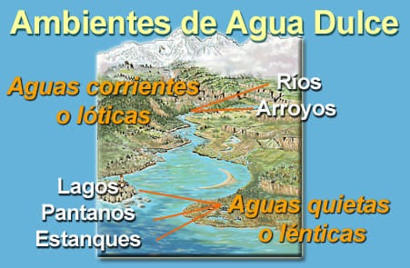
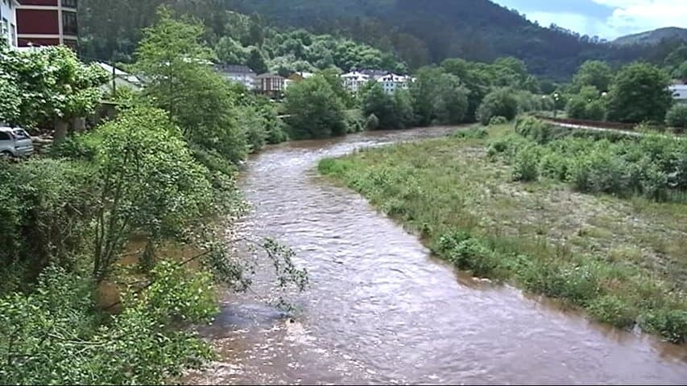
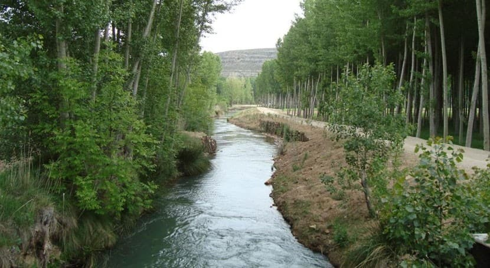

El bioma de agua dulce constituye sólo el 0,8% de todo el cuerpo de agua del planeta tierra. El agua que constituye este bioma también está distribuida de manera desigual en todo el mundo. Debido a esta distribución desigual, el clima de estos biomas difiere según la región en la que se encuentren.
En promedio, las temperaturas invernales en los biomas de agua dulce oscilan entre los 65 grados Fahrenheit y los 75 grados Fahrenheit en el verano. Las temperaturas invernales, por otro lado, oscilan entre los 35 grados Fahrenheit y los 45 grados Fahrenheit. El clima de los biomas de agua dulce depende de una serie de factores como la estación, la ubicación y la profundidad del agua
